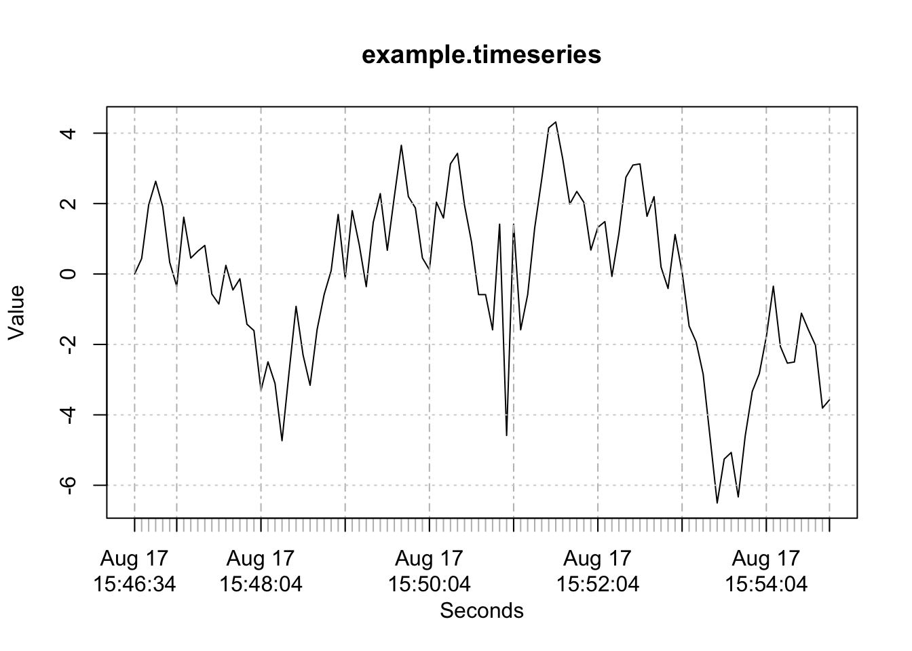
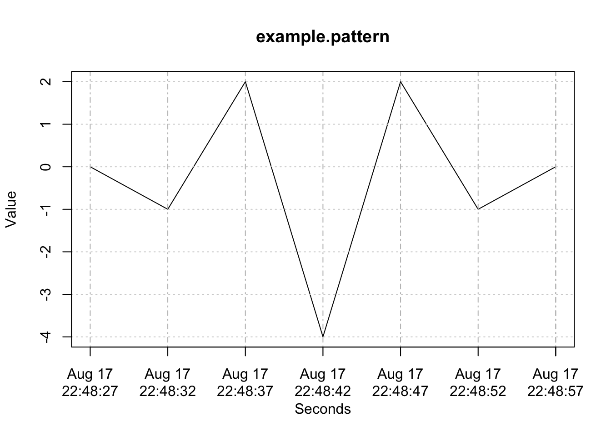

A Time Series Pattern Query Tool Using PIPs and Hybrid Template-Ruleset Matching
Joshua Anthony Marsh
2016-08-13
Introduction
The Time Series Pattern Query Tool (henceforth referred to as the “TSPatternQuery” for short) is meant for quick exploration of time series patterns, and is designed to be usable by individuals of varying skill. This package can be viewed as an implementation of the “real time hybrid pattern matching scheme” presented in (Z. Zhang et al. 2010). In short, this is a sliding window algorithm. Important points are identified within the window at each offset. They are then compared to a template of the desired pattern using spearman’s rho as a similarity measure. Additional rules provided to the function may be used to increase accuracy, or to short circuit the algorithm in order to increase speed.
The rest of this document will be laid out as follows. The first section will go into further detail explaining the underlying algorithm. The second section will present the different functions made available through the TSPatternQuery. This section will also briefly mention the CreateCustomTimeSeries function that has been provided to help the user in creating pattern templates. The last section will discuss best practices and provide examples.
Algorithm
The TSPatternQuery matching algorithm takes as its input a time series (the data), a pattern represented as a second shorter time series, and (optionally) some additional rules that help describe the desired pattern. These rules are contained within a distinctive feature function and a ruleset function. Additional inputs may be used to specify the length of the sliding window and the spearman rho threshold used for template matching, however these are less critical to understanding the algorithm, and will be discussed in the next section.
At a given offset of the sliding window, the first step is identifying all of the points within the window. Note that the window length is defined in seconds, not number of points.
This subset of the overall time series is then checked against the rules contained within the distinctive feature function. If it does not match the distinctive feature, the window moves by one point and matching starts over.
If the points within the window are found to match the distinctive feature and there are at least as many points within the window as their are in the pattern template, then “perceptually important points” (PIPs) are identified. PIPs are points that are likely to be important in forming the shape of any patterns within the data. TSPatternQuery uses the perpendicular distance method for PIP identification. Refer to (Fu et al. 2007) for more information on PIPs. The number of PIPs identified is equal to the number of points that make up the pattern template. It is important that the endpoints of the pattern are estimates of the time series before and after the pattern has occurred. This is because the PIP identification algorithm always identifies the first and last points of each window as PIPs. Since window length is meant to be longer than the length of the pattern, this generally results in the PIP endpoints not actually being part of the pattern itself.
Note that PIP identification is a highly complex algorithm, meaning that it is very slow. The purpose of the distinctive feature function is to stop the algorithm before it reaches PIP identification, thus making it run faster. See below for an example of PIPs identification.
head.and.shoulders <- CreateCustomTimeSeries(
c(1, 3, 2, 4, 4, 7, 3, 3.1, 5.5, 10, 9.8, 9.9, 6, 4, 6.5, 6, 5.8, 1),
sample(7:13, 17, replace = T)
)
plot(head.and.shoulders, main = "Raw Time Series")
plot( GetPIPs(head.and.shoulders, 7), main = "PIPs" )
PIPs are then compared to the pattern template using Spearman’s rank correlation coefficient. If Spearman’s rho is below a certain threshold, then the window moves to the next offset and matching starts over. Spearman’s rho works by ranking the values within the two sequences and then calculating the correlation between said ranks. Therefore, actual values do not matter during template matching, only their ranks relative to one another. For example, a pattern with values [15, 20, 25] will be ranked [1,2,3] and will have a Spearman’s rho of 1 when compared with any other sequence of numbers that are ranked [1,2,3].
If the Spearman’s rho is above the threshold, the window and pips are then checked against rules contained within the ruleset function. If the window and pips satisfy the ruleset, then the window is counted as a match. The ruleset is intended to hold rules that are higher complexity and therefore run more slowly. The purpose of the ruleset is to improve accuracy (as opposed to speed).
See (Z. Zhang et al. 2010) for a more detailed description of the hybrid matching algorithm that TSPatternQuery is based on. The only significant difference is the addition of distinctive feature prior to PIP identification and template matching.
Functions
Query
The Query function is the main interface to TSPatternQuery.
Query <- function(timeseries,
pattern.template,
distinctive.feature,
ruleset,
window.length = 1.2*GetTimeLength(pattern.template),
spearmans.rho.threshold = 0.7,
return.matched.patterns = FALSE
) timeseries
timeseries is the data being queried (i.e. the time series that may or may not contain the pattern being searched for). It should be an xts time series object. timeseries can be of any length, and may be regular or irregular (i.e. time intervals betwen points do not have to be of the same length).
pattern.template
The pattern.template is an xts time series that serves as a representation of the pattern being searched for. It should be the same length (in seconds) as the pattern is estimated to be, and consist of the minimum number of points necessary to create the pattern’s shape. The first and last points in pattern.template (the endpoints) must be estimations of the time series BEFORE and AFTER the pattern has occured, otherwise it will liekly not match. For example, if the time series is normally constrained between 1 and -1, but the pattern contains points outside of this range, then a good value for the pattern.template endpoints would likely be 0.5.
The TSPatternQuery algoirhtm does not read times as absolute values. It only considers the time intervals (in seconds) between points. Thus, using a pattern.template with times/dates that are far removed from the timeseries data is perfectly acceptable. In other words, a pattern.template with timestamps from 2016 will still match data from 1990, so long as the shape is sufficiently similar.
Similarly, actual values do not matter on the y-axis (only their ranks) because template matching uses Spearman’s rho. See part 4 of the algorithm in section 2 for more information.
See (Fu et al. 2007) and (Z. Zhang et al. 2010) for more on template matching.
distinctive.feature
The distincitve.feature parameter accepts a function containing rules for ruleset based matching. It should accept one parameter, which will contain the current window in xts format.
distinctive.feature <- function(window){
Window.Matches.Distinctive.Feature <- #Some Expression
if( Window.Matches.Distinctive.Feature ){
return(TRUE)
}
else{
return(FALSE)
}
}This function is run PRIOR to PIP identification and template based matching. If the current window does not contain match the distinctive.feature, then the algorithm will move on to the next window with identifying PIPs. Proper use of the distinictive.feature parameter can signficantly decrease the time it takes for the algorithm to run, since it prevents the slow GetPIPs function from being called.
Errors originating from the user-defined distinctive.feature function will simply cause the window to move to the next offset, having not found a match. This is as opposed to causing the Query function to crash, and is done for the following reasons:
- To encourage the use of short, low-complexity functions.
- There is no gaurantee that enough data points have been found within the window to be able to index specific points (e.g. window[[4]] would be out of bounds for a window containing only 3 points) and it is assumed that many R users are not familiar with error handling. Instructing users that errors in their function will be counted as Match = FALSE has been chosen as a more user friendly alternative to requiring that users learn R’s TryCatch syntax.
Users are strongly recommended to test their distinctive.feature functions before using them with a large data set. See the Best Practices section below for more info on how to test these functions.
This is similar to ruleset matching as discussed in (Fu et al. 2007) and (Z. Zhang et al. 2010), however, with an emphasis on improving speed rather than accuracy.
ruleset
The ruleset parameter accepts a function containing rules for ruleset based matching. It should accept two parameters, which will contain the raw window and PIPs from said window respectively (both in xts format).
ruleset <- function(window, pips){}This function is run AFTER PIP identification and template based matching. Unlike the distinctive.feature parameter, errors originating from this function WILL cause Query to crash. This is done for because ruleset is considered a more advanced feature than distinctive.feature since it is meant to contain higher complexity rules. Therefore users are expected to employ proper error handling within their code.
Users are strongly recommended to test their ruleset functions before using them with a large data set. See the Best Practices section below for more info on how to test these functions.
See (Fu et al. 2007) and (Z. Zhang et al. 2010) for ruleset matching.
window.length
The window.length parameter is a numeric that sets the length of the sliding window in seconds. It should be slightly longer than the pattern is expected to be. This parameter defaults to 1.2 times the length of the pattern.template (in seconds).
window.length = 1.2*GetLengthInSeconds(pattern.template)Special attention should be paid to ensuring that the window.length is reasonable. If the window.length is too small, the pattern will not fit inside of it. If the window.length is too long, it is possible that the algorithm will not find the correct PIPs.
window.length is the most sensitive parameter as it can greatly effect the PIPs that are identified. Adjusting the window length is a good first step to try when Query is not finding expected patterns.
spearmans.rho.threshold
spearmans.rho.threshold is the threshold used to define a match between the PIPs identified in the current window and the pattern.template. It is set to 0.7 by default. Note that this applies to template matching only.
spearmans.rho.threshold = 0.7A low spearmans.rho.threshold will cause the algorithm to be very permissive in what it considers a match. A high spearmans.rho.threshold will cause the algorithm to be more strict.
return.matched.patterns
return.matched.patterns acts as a flag. If TRUE, Query will return a list of matched windows. If FALSE, Query will return a data.frame containing the number of matches found.
return.matched.patterns = FALSEreturn.matched.patterns is set to false by default
CreateCustomTimeSeries
The CreateCustomTimeSeries function has been provided to aid the user in creating pattern templates. It may also be used to easily create xts time series for the purpose of testing distinctive.feature and ruleset functions. CreateCustomTimeSeries takes two parameters. The first is a vector of values for the time series (i.e. the y axis values). The second is a vector of time intervals (in seconds).
CreateCustomTimeSeries <- function(values,
intervals
)values
values should be a vector of (y-axis) values for the time series.
intervals
intervals is a vector of time intervals (in seconds). When creating a time series to act as a pattern template, the sum of the intervals should be equal to the expected length of the pattern. For example, if the pattern is expected to occur in 15 seconds on average, c(3,3,3,3,3) would be an appropriate intervals vector.
The length of the intervals vector must be 1 less than that of the values vector If values <- c(1,2,3) and intervals <- c(5,6), then the interval between 1 and 2 will be 5 seconds, and the interval between 2 and 3 will be 6 seconds. The point is set as the current time.
GetWindowVariancePDF
GetWindowVariancePDF calculates the probability density function of variances in a given time series for each offset of a given window length. The window length in GetWindowVariancePDF is in number of points, NOT seconds. The number of points should be set to slightly larger than the number of points in the pattern. A good rule of thumb would be to use around 1.1 - 1.2 times the number of points for GetWindowVariancePDF as there are in the pattern, depending on how many extra points are expected to be picked up by the sliding window in the Query function. GetWindowVariancePDF returns a list containing (1) a numeric which represents the variance with the highest probability, (2) the density function (approxfun of the density object), and (3) the density object as calculated using R’s built in density() function.
GetWindowVariancePDF <- function(timeseries, window.length)timeseries
The time series which will be scanned using a sliding window to find the variance of points within the window at each offset.
window.length
The window length of the sliding window.
GetPIPs
Perceptually important points (PIPs) are points that have been identified as perceptually important for the formation of patterns within a time series. GetPIPs is used by the Query function to identify PIPs within the sliding window at each offset. The function has been made available for users to call in order to test their curstom pattern templates.
GetPIPs uses the perpendicular distance method of PIP identification. It begins by assigning the endpoints of the timeseries as the first two PIPs. It then finds the point between those two PIPs with the greatest perpendicular distance to the line connecting said PIPs. It repeats this process until the desired number of PIPs have been identified.
See (Fu et al. 2007) for more information on PIPs.
GetPIPs <- function(timeseries, num.pips) timeseries
The time series within which PIPs will be identified. Remember that the first two PIPs will always be the first and last point of this time series.
num.pips
The number of PIPs to identify.
MatchPattern
This is the function used by Query to check whether two time series (i.e. a window and pattern template) match based on the template matching method. This is done by calculating the Spearman’s rho between the two time series, and returning true if it is above a threshold. The threshold is set to 0.7 by default
The MatchPattern function is made available for users to use in testing their pattern templates.
MatchPattern <- function(timeseries, pattern.template, threshold=0.7)timeseries
The timeseries that will be check against the pattern to see if they match.
pattern.template
The pattern template that will be checked against. timeseries for a match.
threshold
The Spearman’s rho threshold, above which timeseries and pattern.template will be counted as matching (the function will return TRUE). This is set to 0.7 by default, and should be between 0 and 1. Increasing this value will cause the function to be more strict in what it considers to be a match. Decreasing it will cause the function to be more permissive.
Best Practices
Testing User Defined Parameters
While TSPatternQuery is meant for quick exploration of patterns within time series data, pattern templates, distinctive features, and rulesets should still be tested to verify that they behave as expected. The amount of effort expended on testing may differ depending on the desired verifiability of the results.
The simplest way in which to test these things is by using the R console to check that they return the correct results under each possible condition that they may encounter. Several conditions that all ruleset and distinctive feature functions should be tested for include:
- Does it return TRUE when its supposed to
- Does it return FALSE when its supposed to
- Are there any situations in which it might return NA? This will be counted as FALSE by the algorithm. Is this desireable?
- Are there any situations in which it might throw an Error? This will be counted as FALSE by the algorithm. Is this desireable?
More rigorous testing may be performed using RUnit or testthat packages. These facilitate the creation of automated scripts containing the same sort of tests that one might type into the console, as described above. The advantage of this sort of testing is that it is automated, and may thus be run each time something is added or changed. This reduces the liklihood of things breaking unexpectedly.
Note that the CreateCustomTimeSeries function may be used, not only to create pattern templates, but also to create time series for testing purposes.
Simple Distinctive Features
Below are several functions that may be passed to the distinctive.feature parameter. Remember that the aim of distinctive.feature is to reduce running time by finding false matches early in the algorithms exectution (i.e. before PIP identification). The first function will include a worked example.
Exclusion Based on Variance - A Worked Example
If the variance of the pattern significantly differs from that of the surrounding time series, then excluding low (and/or high) variance segments can be an effective distinctive feature.
The function GetWindowVariancePDF has been included in the TSPatternQuery package in order to help determine whether exclusion based on variance is a appropriate for a given time series and window size.
This worked example will demonstrate querying the ts.low.var time series with the pattern.headandshoulders pattern. The GetWindowVariancePDF function will be used to find an appropriate variance to exclude. Most of the source code used in this example has been made visible for demonstration purposes. The comments above each chunk of code should be sufficient to follow along without needing to read every line of code.
The first step will be to define a pattern, import some data for the time series, and the these two things.
#define pattern
pattern.headandshoulders <- CreateCustomTimeSeries(
c(0,4,2,6,2,4,0),
c(5,5,5,5,5,5)
)
#import time series data
ts.low.var.csv <- read.csv("var-exclusion-ts.csv")
ts.low.var <- xts(ts.low.var.csv[[2]], order.by = as.POSIXct(ts.low.var.csv[[1]]))
#Plot time series and pattern
plot(ts.low.var)
plot(pattern.headandshoulders)

Comparing the variance of the pattern to the probability density function (PDF) of the time series (see below) reveals that a significant number of windows have a lower variance than the pattern. Therefore, variance exclusion is an appropriate distinctive feature for this particular query.
#Plot the Time Series Variance Probability Density Function (PDF)
ts.low.var.pdf <- GetWindowVariancePDF(ts.low.var, window.length=8)
curve(ts.low.var.pdf$density.fun(x),
from= min(ts.low.var.pdf$density.points$x),
to=max(ts.low.var.pdf$density.points$x),
main="Time Series Variance \nProbability Density Function",
ylab="Probability",
xlab="Window Variance",
sub="The red vertical line is the pattern variance.")
#Calculate the Pattern Variance and Add to the PDF Plot as a Vertical Red Line
pattern.var <- var(pattern.headandshoulders)
abline(v=pattern.var, col="red")
Since one or more additional points may be picked up in the same window as the pattern, it is a good idea to ensure that the variance exclusion threshold is not too close to the pattern variance. The pattern variance here is about 4.9, so a threshold of 3.5 will be used. This should still be an effective threshold based on the time series’ PDF function (above).
#The query function finds two matches in the time series
initial.results <- Query(
ts.low.var,
pattern.headandshoulders,
window.length = 40,
return.matched.patterns = TRUE
)
#Plot the two matches
plot(initial.results[[1]], main = "1st Matched Window",
sub=paste("Variance =", var(initial.results[[1]])))
plot(initial.results[[2]], main = "2nd Matched Window",
sub=paste("Variance =", var(initial.results[[2]])))

Note that the variance of the first matched window (0.5222922) is much lower than that of the second matched window (variance = 4.7704365).
Recording the running time of the Query function with and without an “Exclude Low Variance” distinctive feature reveals that the algorithm runs significantly faster with said distinctive feature.
#Time the Query algorithm WITHOUT variance exclusion as a distinctive feature
#and store the result in t.without.df
t.without.df <- system.time(
results.without <- Query(
ts.low.var,
pattern.headandshoulders,
window.length = 40,
return.matched.patterns = TRUE
)
)
#Time the Query algorithm WITH variance exclusion as a distinctive feature
#and store the result in t.with.df
exclude.low.var <- function(window){
var.threshold <- 3.5
return(var(window)>var.threshold)
}
t.with.df <- system.time(
results.with <- Query(
ts.low.var,
pattern.headandshoulders,
window.length = 40,
distinctive.feature = exclude.low.var,
return.matched.patterns = TRUE
)
)
#Print the elapsed times
cat("Elapsed Time Without Excluding Low Variance:", t.without.df[[3]],
"\nElapsed Time With Excluding Low Variance:", t.with.df[[3]] )## Elapsed Time Without Excluding Low Variance: 0.53
## Elapsed Time With Excluding Low Variance: 0.214Note that the previously 1st Matched Window from before no longer matches since it does not satisfy the distinctive feature of having a variance greater than 3.5. This may or may not be desireable depending on the circumstances.
length(results.with)## [1] 1plot(results.with[[1]], main="The Only Window Returned When Variance \nExclusion was Used",
sub=paste("Variance =", var(results.with[[1]]) ) )Increasing or Decreasing (On Average)
increasing <- function(window){
return( mean(diff(as.vector(window))) > 0 )
}
decreasing <- function(window){
return( mean(diff(as.vector(window))) < 0 )
}Increasing or Decreasing (Every point is greater/less than its predecessor)
increasing.monotonically <- function(window){
return(all(window == cummax(window)))
}
decreasing.monotonically <- function(window){
return(all(window == cummin(window)))
}See StackOverflow - How to check if a sequence of numbers is monotonically increasing (or decreasing)? for more about detecting monotonically increasing or decreasing vectors using cummax and cummin.
In Range
within.range <- function(window){
ceiling <- 5
floor <- -5
return ( all(window < ceiling) && all(window > floor))
}A Note on Rulesets
The ruleset parameter is meant for more complex functions than distinctive.feature. A good rule of thumb is if a function uses loops (especially embedded loops), or is otherwise knwon to be slow, then it should be included in ruleset rather than distinctive.feature. Functions that rely on PIPs must also go in rulset since PIPs are not made available to distinctive.feature functions.
Combining Rules for Aggregated Rulesets and Distinctive Features
Multiple functions may be passed to ruleset or distinctive.feature by wrapping them inside of a single function. The example shown here will use ruleset but can be applied to distinctive.feature so long as the component functions only use the window argument (since distinctive.feature does not deal with PIPs).
First begin by defining the functions that will make up each of the rules.
contains.three.peaks.above.10 <- function(pips){
stopifnot(length(pips) != 7)
#Assign peaks based on 7 points head and shoulders template
possible.peak1 <- pips[[2]]
possible.peak2 <- pips[[4]]
possible.peak3 <- pips[[6]]
#Check that peaks are actually peaks (i.e. that they are higher than adjacent points)
if(possible.peak1 < pips[[1]] | possible.peak2 < pips[[3]]) return(FALSE)
if(possible.peak2 < pips[[3]] | possible.peak2 <pips[[5]]) return(FALSE)
if(possible.peak3 < pips[[5]] | possible.peak3 < pips[[7]]]) return(FALSE)
#Return true if peaks are higher than 10
return(possible.peak1>10 && possible.peak2 > 10 && possible.peak3 >10)
}
middle.peak.is.higher <- function(pips){
peak1 <- pips[[2]]
peak2 <- pips[[4]]
peak3 <- pips[[6]]
return(peak2 > peak1 && peak2 > peak3)
}
variance.greater.than.2 <- function(window){
return(var(window)>2)
}Then call them all from within a single “aggregate ruleset” function. The aggreate function is passed to Query as normal.
aggregate.ruleset <- function(window, pips){
firstRule <- contains.three.peaks.above.10(pips)
secondRule <- middle.peak.is.higher(pips)
thirdRule <- variance.greater.than.2(window)
return(firstRule && secondRule && thirdRule)
}
Query(
ts.low.var,
pattern.headandshoulders,
window.length = 40,
ruleset = aggregate.ruleset,
return.matched.patterns = TRUE
)References
Fu, Tak-chung, Fu-lai Chung, Robert Luk, and Chak-man Ng. 2007. “Stock Time Series Pattern Matching: Template-Based Vs. Rule-Based Approaches.” Eng. Appl. Artif. Intell. 20 (3). Tarrytown, NY, USA: Pergamon Press, Inc.: 347–64. doi:10.1016/j.engappai.2006.07.003.
Zhang, Zhe, Jian Jiang, Xiaoyan Liu, Ricky Lau, Huaiqing Wang, and Rui Zhang. 2010. “A Real Time Hybrid Pattern Matching Scheme for Stock Time Series.” In Proceedings of the Twenty-First Australasian Conference on Database Technologies - Volume 104, 161–70. ADC ’10. Darlinghurst, Australia, Australia: Australian Computer Society, Inc. http://dl.acm.org/citation.cfm?id=1862242.1862263.